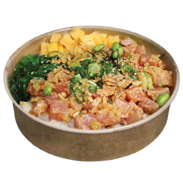

Poke Bowl

A refreshing bowl featuring marinated raw fish, rice, and tropical flavors.
Ingredients
- 1 lb sushi-grade ahi tuna, cubed
- 2 cups cooked sushi rice
- 1/4 cup soy sauce
- 1 tbsp sesame oil
- 1 tbsp rice vinegar
- 1 tsp ginger, minced
- 1 tsp garlic, minced
- Green onions, sliced
- Avocado, sliced
- Mango, diced
- Seaweed strips
Steps
- In a bowl, mix soy sauce, sesame oil, rice vinegar, ginger, and garlic.
- Add tuna cubes and marinate for 15 minutes.
- Arrange rice in bowls, top with marinated tuna, avocado, mango, and seaweed strips.
- Garnish with sliced green onions.